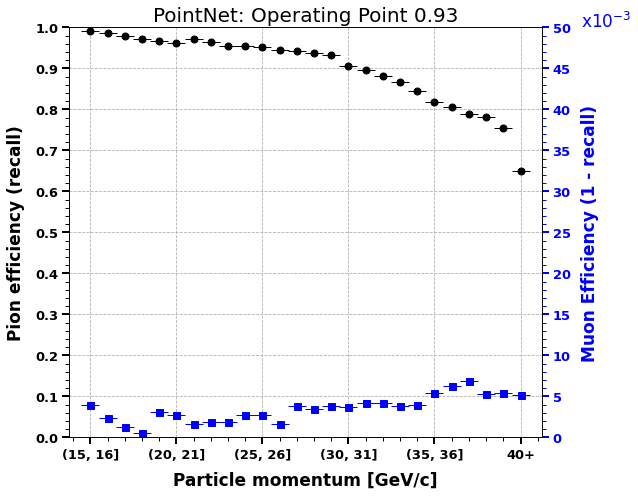
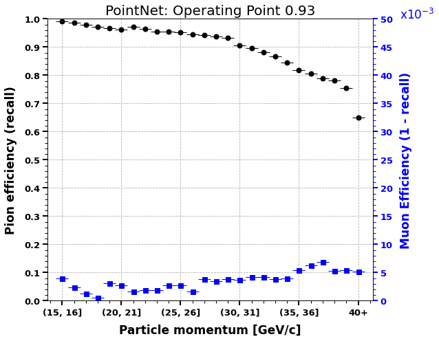

Data Science Methods
Contents
Data Science Methods#
Baseline model: Gradient boosted trees#
Deep learning#
Selecting models#
In selecting our deep learning models, we searched for models that were specifically designed to work well with point cloud coordinate data. Based on this research, we identified two models with architectures that appeared to fit our problem scope well. The first model that we identified was called PointNet [Qi et al., 2017], which was developed by researchers at Stanford University. The second model that we identified was called Dynamic Graph CNN [Wang et al., 2019], which was developed by researchers at Massachusetts Institute of Technology, UC Berkely, and Imperial College London. We also note that traditional convolutional neural networks would not work well for our data due to its sparsity.
Tuning models#
We tried out two separate feature combinations when tuning both PointNet and the Dynamic Graph CNN models. The first feature combination was a model that took the hits point cloud, momentum, and radius data as input to the neural networks. The second feature combination was a simpler model that did not take the radius as input, but still received the hits point cloud and momentum data.
In terms of hyperparameters, the common hyperparameters that were tuned were the:
Time delta between the hit time and the CHOD time, for which values of 0.20ns to 0.50ns were used
Learning rate, for which a constant learning rate and a learning rate scheduler were used
Number of epochs, for which a maximum of 24 epochs were used
The Dynamic Graph CNN had an additional hyperparameter, which was the value \(k\) for the K-nearest neighbours graph that is dynamically generated by the models architecture. We tried values between 8 and 20 nearest neighbors.
PointNet#
Model benefits#
PointNet achieves a strong pion efficiency accross all momentum bins, while maintaining similar muon efficiency to prior NA62 performance
PointNet uses a symmetric function (max pooling) to make it robust to any change in the order of the coordinates that make up the input point cloud data
PointNet uses a Spatial Transformer Network [Jaderberg et al., 2015] to make it robust to any spatial variability within the input point cloud data
Model shortcomings#
PointNet requires the longest training time of all the models we tested (~24 hours on three GPUs)
By it’s design, PointNet is not able to capture local information within the point cloud
Best performing model#

As can be seen in the receiver operating characteristic curves (“ROC”) above, our best PointNet model consisted of the following:
All features: hits point cloud, momentum, and radius
Time delta: 0.20ns
Learning rate: Linear annealing scheduler. Initial learning rate of 0.0003 that increases to 0.003 in the first half of training, before decreasing back to the original learning rate in the second half of training
Epochs: 16 epochs of training
We selected an operating point of 0.93 on the ROC curve, as this allowed us to achieve a strong pion efficiency while maintaining good muon efficiency relative to the NA62 results.
Dynamic Graph CNN#
Model benefits#
Dynamic Graph CNN is designed to capture local information within the point cloud data
Dynamic Graph CNN training time is almost two times faster than PointNet
Model shortcomings#
Although Dynamic Graph CNN can maintain a similar pion efficiency to PointNet, it stuggles with muon efficiency.
Best performing model#

As can be seen in the receiver operating characteristic curves (“ROC”) above, our best Dynamic Graph CNN model consisted of the following:
All features: hits point cloud, momentum, and radius
Time delta: 0.30ns
Learning rate: Linear annealing scheduler. Initial learning rate of 0.0003 that increases to 0.003 in the first half of training, before decreasing back to the original learning rate in the second half of training.
Epochs: 8 epochs of training
We selected an operating point of 0.96 on the ROC curve, as this allowed us to achieve a strong pion efficiency. We were unable to select an operating point that achieved both a good pion efficiency and a good muon efficiency.
Overall model results#
Selecting the overall best model#

In selecting our overall best model, we used the ROC curve. As can be seen in the figure, our overall best model was PointNet, following by Dynamic Graph CNN. Both deep learning models were able to surpass our baseline XGBoost model.
Model efficiencies#
 

In analyzing our final model performance in terms of pion and muon efficiency, we note the following:
Both the PointNet and Dynamic Graph CNN models were able to surpass the prior NA62 pion efficiency performance across all momentum bins.
The Dynamic Graph CNN model was unable to achieve a similar muon efficiency to NA62 in any momentum bin.
The PointNet model was able to surpass NA62 muon efficiency in momentum bins > 34 GeV/c.
- JSZ+15
Max Jaderberg, Karen Simonyan, Andrew Zisserman, and others. Spatial transformer networks. Advances in neural information processing systems, 2015.
- QSMG17
Charles R Qi, Hao Su, Kaichun Mo, and Leonidas J Guibas. Pointnet: deep learning on point sets for 3d classification and segmentation. In Proceedings of the IEEE conference on computer vision and pattern recognition, 652–660. 2017.
- WSL+19
Yue Wang, Yongbin Sun, Ziwei Liu, Sanjay E Sarma, Michael M Bronstein, and Justin M Solomon. Dynamic graph cnn for learning on point clouds. Acm Transactions On Graphics (tog), 38(5):1–12, 2019.